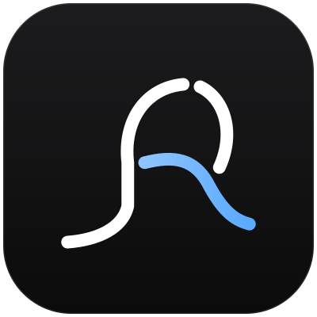

ASAP
Agent Supervision & Approval Platform
menghubungkan…
0 agent aktif
0 perlu review
☑ Todo
›_ Terminal
Folder
⟳
+ Tambah folder
Simpan
Batal
Agentic Running
+ Task baru
Project:
Sonnet 5.5 (default, hemat kuota)
Opus 5.5 (paling pintar)
Haiku 4.5 (paling ringan)
Agent bekerja di git worktree terpisah dari commit terakhir — perubahan yang belum di-commit tidak ikut.
Jalankan agent
Batal
Perubahan
Jelajah
Git
▾
›_
⟳
Semua branch
⟳
Saran Claude
+
▾